Leisure Suit Larry (Ларри в выходном костюме) — винрарнейшая игра всех поколений олдфагов про неудачника-задрота, решившего отдохнуть и поискать в городе блэкджека и шлюх свою любовь (на самом деле, снять тёлку) и перестать дрочить.
На самом деле, Ларри был типичным битардом — ему не давали девушки, он не имел реальных друзей и жил с мамой. Но ВНЕЗАПНО он понял: фап не есть правильное решение, посему натянул модный (в момент его молодости) выходной костюм и пошел снимать тёлок. И пошел не куда-нибудь, а в город, знаменитый своими многочисленными казино и шлюхами — Lost-Wages — намек на Лас-Вегас, переводится как «Потерянная зарплата», что символизирует.
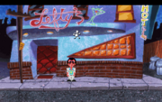
Начало.
Посмотрели в глаза девочке.
Обыкновенный квестовый игровой мир с возможностями прочувствовать каждый объект: посмотреть, потрогать, понюхать, можно даже поссать на него. Феноменальным было невиданное и беспощадное новшество — можно было фапать в сортире бара. Сделан мир юзабельно и привычно для того времени.
Игра начинается у бара Лефти, где наш герой-любовник лишь с 90 долларами начинает покорять городишко. Во время игры могут встретиться барышни, с которыми можно поговорить лицом к лицу, то есть лицо очередной гламурной кисы предстанет перед игроком крупным планом. Примечательно, что со всеми таковыми девушками главгерой захочет переспать (что неудивительно: они весьма фапабельны), (спойлер: причём в 3 из 4 случаев ему это удается).
Был солидных размеров инвентарь с традиционным набором несовместимого между собой хлама, и деньги, которые можно (и нужно) использовать, чтобы расплачиваться с таксистом и делать покупки. Финансовое положение можно невозбранно улучшать в казино у «однорукого бандита», если, предварительно сохранившись, делать самую большую ставку.
Алсо ГГ мог весьма эпично принять ислам более чем 9000 способами; в каждом отдельном случае показывается детализированный мини-ролик, почти как в этом вашем Dangerous Dave. С фантазией у разрабов все было в порядке: можно умереть, например, от того, что, гуляя по улице, наткнёшься на крысу, которая внезапно откусит ГГ МПХ.
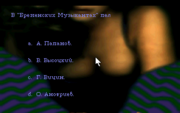
Проверка на возраст.
В игре существует так называемая «проверка на возраст». Заключается она в том, что нужно ответить на пять несложных (для пиндосского олдфага тех времён) вопросов. Вопросы попадаются самые различные — от «Сколько сейчас лет твоим родителям?» и «Как звали трактор в „Трое из Простоквашино“?» до скандала Watergate и испытания ядерных бомб в Семипалатинске. А насколько хорош был вопрос «сколько будет 1+1?», ответом к которому было число «10»… а вопрос «Что такое менуэт?»… Тысячи их!
На самом деле, всё предельно просто: вопросов очень ограниченное количество, так что даже при незнании можно легко угадать с н-ной попытки. В общем, сделано just for lulz.
A еще можно было нажать Ctrl+Alt+X и пропустить эти вопросы, если лень отвечать. Правда, тогда программа люто бешено скажет: «CHEATER! CHEATER! CHEATER!» — и будет права.
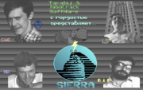
Вот эти ребята.
Переводом игры занималась ростовская фирма Taralej & Jabocrack из пяти человек. Перевод этой конторки настолько доставлял, что игра в момент приобрела популярность у русскоговорящих анонимусов в этой стране. Если учесть, что русскоязычных игр в то время почти и не было, Larry ждал двойной эпический вин. Игра моментально разлетелась по пиратским BBS и впоследствии вышла на диске «Лучшие игры для IBM-PC» #6 конторы -=Classic Fond=-. Геймплей в переводе T&J не только сохранил труднопереводимый фольклор, но и вобрал в себя исконно русские лулзы, чем изрядно доставил.
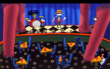
Сферический Комеди Клаб в Ларри 1.
В игре невозбранно присутствует достаточно забавный юмор. Например, в ресторане при казино есть комик, характерно отражающий унылую действительность комического жанра. Многие шутки комика были значительно веселее, чем эта статья, при этом между речами он сокрушался: «И ради этого я пять лет учился в техникуме». Присутствует барабанщик, который издаёт дробь в том месте, где надо смеяться.
Также игра содержит большое количество очень забавных цитат (большинство придумано локализаторами):
К сожалению, Larry 2 и Larry 3 так и не были запилены Сьеррой в Vga-версии, и играть в них может разве что самый суровый олдфаг. Larry 4 никогда и не существовало. Аффтар игрульки пустил миф, что его дискеты с четвёртой частью были потеряны, и он не смог закончить игру. Но мы то с вами знаем…
5-ую часть, которая являлась самым актуальным продолжением, ждали, ждали, да так она на русском языке и не вышла. Несмотря на то, что в конце предыдущей части выползший из шкафа Лёня Соболев обещал, что их конторка уже начала перевод Larry 5 и вскоре порадует продолжением. Слухи так и не подтвердились.
Конечно, чуть позже вышла шестая часть, переведённая уже другой конторкой, а дальше уже официальная фаргусовская, в действительности переведенная командой из Новосибирска, седьмая «Love for Sail», но тем не менее полноценное русскоязычное продолжение в виде пятой части так и кануло в бездну.
Седьмая часть «Love for Sail» (1997 год) окончилась анонсом восьмой части, в которой предполагались приключения Ларри среди инопланетян. Но то ли у разработчиков иссякла фантазия, то ли они поняли, что инопланетяне превратят винрарный квест в УГ, но восьмой части никто так и не увидел.
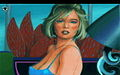
Larry 1 и пять девушек, к которым можно приставать (одна из них не живая, угадай кто).
Larry 5 и всего три девушки, к которым можно приставать.
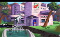 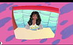 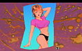 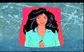
Larry 6 и восемь девушек, к которым можно приставать (одна из них — переодетый мужик).
Larry 7 — скриншоты.
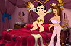  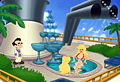
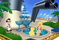
Larry 7 и восемь девушек, к которым можно приставать (по завершении истории с девушкой и за «поиск стручков» игра генерировала такие вот картинки, впрочем они же лежали среди файлов игры с именами memory[N].drv).
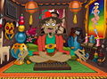 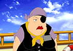 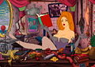 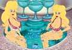 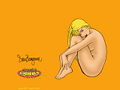 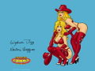 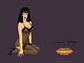 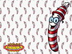
Larry MGL и четыре красавицы (квест переформировали в сборник мини-игр, но девушек оставили, и их довольно много).
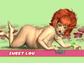